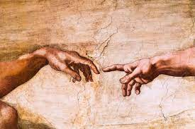
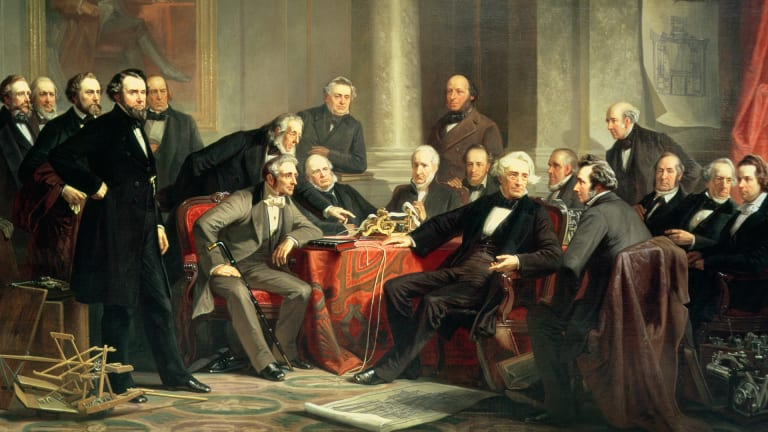

How did europe evolve since The Middle Ages-Pre WW1?
Renaissance-Scientific Revolution-Enlightenment-Industrial Revolution-Pre War tensions And New Ideologies and Beleifs
Renaissance

-
Age of the start of interest of trading and expansion, And Curiosity and Creativity. It effected art and living through these ages. This is the time when People focus and build their economies by trading. And soon setting the stage for slavery or surfdom. But it changed literature, art, and philosophy. In this age alot of things that are counted as classical were made. The age of economy and cultural rebirth filled with population growth, Trade routes, Manufacturing systems, Classical Music, Classical Painters and inventors "Da Vinci, Michealangelo,and etc." A age of Beauty.
Scientific Revolution

-
Age of Science, Math, And technology. A age of advancing with things like Pi, Pascals Traingle, and etc. A age most known for its impact for todays technology and how it layed the foundation for our current society by making math important and science. How things were invented and how fast it made some things Obselite and outdated. It is a age filled with the dream of our current civilization.
Enlightenment

-
A age of thinking and fixing in europe and how it had formed the continent to what it is today. It is most well known for being important to the way they might have thought during future wars and how important politics is. But with politics and power comes greed and curroption. A age of monarchy and that ideology to be proved fatal. Especially during the first world war a former world of tyrants and others
Industrial Revolution

-
A revolution of making the industries vital of life in the modern age. It creates what we need and want. At this age more inventions were made to simplify warfare, Life, And Transportation. This is the age of major importance for weapons, transportation, and items to make our lives easier and more automated. A age to be remembered as one to build those for more innovation in the future of transportation, weapons, and life in automation of firing wepons and realoading. To the Planes and cars of today.
Pre War tensions And New Ideologies and Beleifs

-
As Monarchy is strong there are dire problems and needed reforms that need to be addressed. Decades of inbreading leading to misunderstandings and loss of life. It seems as thogh in this time life needs fixing. Surfs are still used in the russian empire. little does tsar know about the future he has instore. and little does europe know that these tensions will cause the domino's to fall for millions dead and a crisis that still live on to this day.